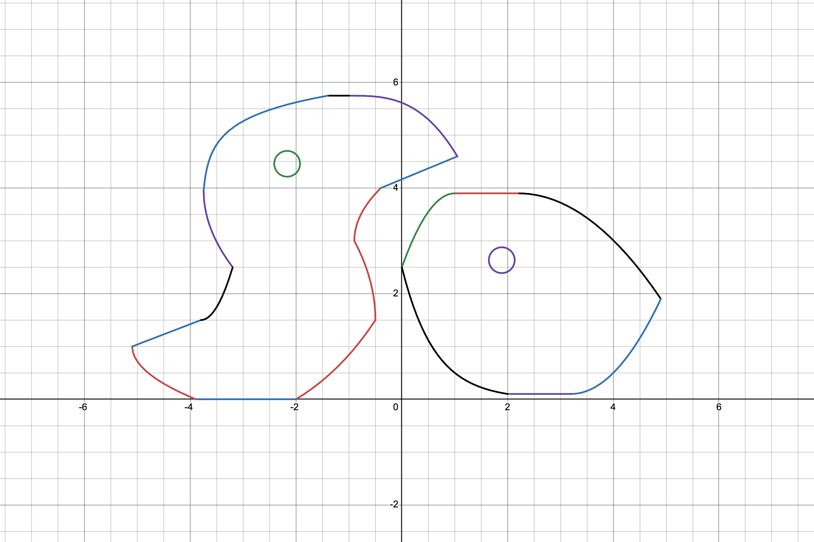

Our exhibition is revolved around a night club so have fun and enjoy your time here! The focus in this exhibition is around Sonic Pi, a music platform used to teach programming with the use of music.

Sonic Pi uses a programming language called Ruby. In Ruby, we use simple instructions to play certain notes and also samples!
Below, we'll go over some basics of Sonic Pi but if you're interested, come make your own music with us!
The first step of Sonic Pi is making sound. Below is a sample of code that produces a note and waits to play another note!
play :C4 # C on a piano!
sleep 2 # wait for two seconds!
play :C4 # Plays C again on the piano!
0:00
0:00
If you need to play a note repeatedly, you can utilize loops to repeat them more efficiently!
5.times do # play everything in this 5 times
play :C4 # C on a piano!
sleep 2 # wait for two seconds!
end # once 5 times finish, then we are done!
0:00
0:00
If you want to play something forever, you can use a live loop instead!
live_loop :play_c4ever do # play everything in this forever
play :C4 # C on a piano!
sleep 2 # wait for two seconds!
end
Instead of having to repeat instructions when we use it throughout our song, we can define it and call it when we need to!
define :play_C4 do # define the name of our function
play :C4 # C on a piano!
sleep 2 # wait for two seconds!
end # finish when we play C and wait 2!
play_C4 # call the function so it's used!
0:00
0:00
Let's say that we wanted to just play another note rather :C4. We can utilize a parameter to get to play what we want!
define :player_a_note do | note_we_want | # define the name of our function and a parameter we need
play note_we_want # plays the note that we want on the piano
sleep 2 # wait for two seconds!
end # finish when we play the note and wait 2!
play_a_note :D4 # we want to play the note :D4
0:00
0:00
That's the gist of Sonic Pi and an introduction to get you started!
Before you go make your own music, listen to a few songs and check the code of each song to see if you can understand how it plays!
Thanks for stopping by!